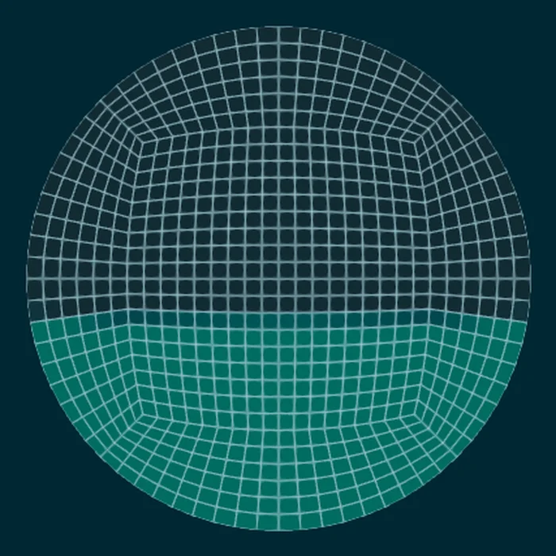
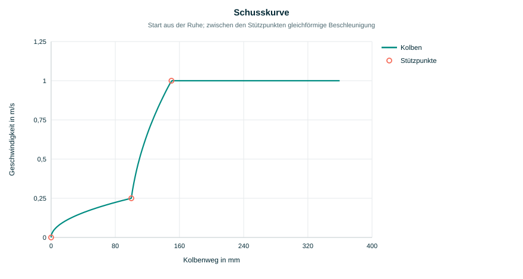
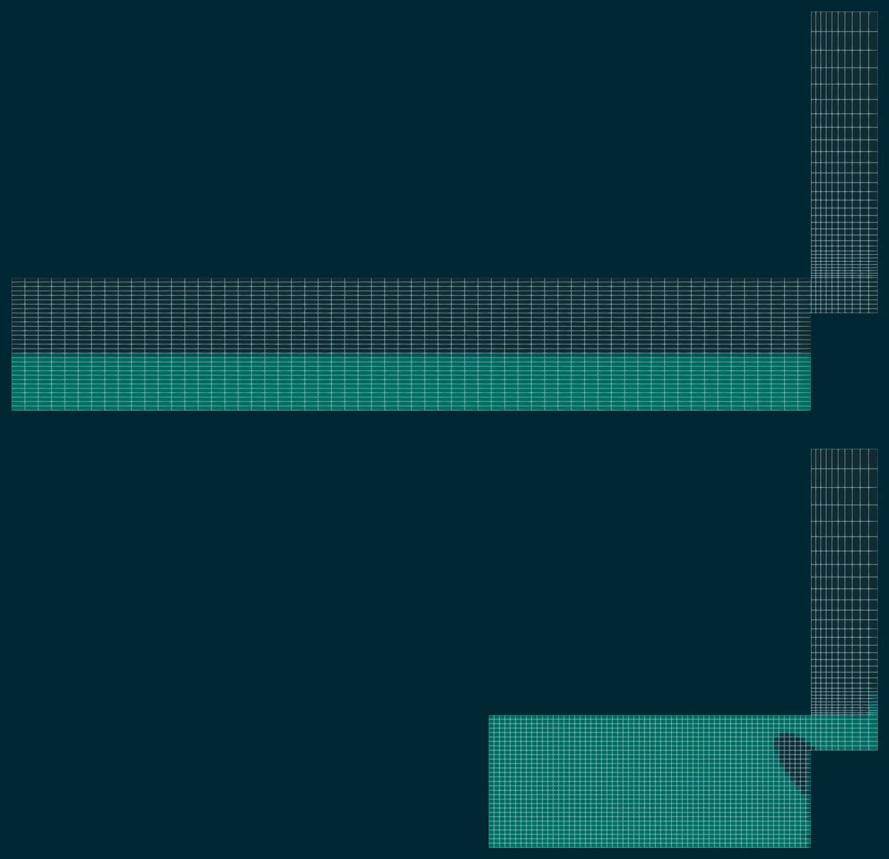
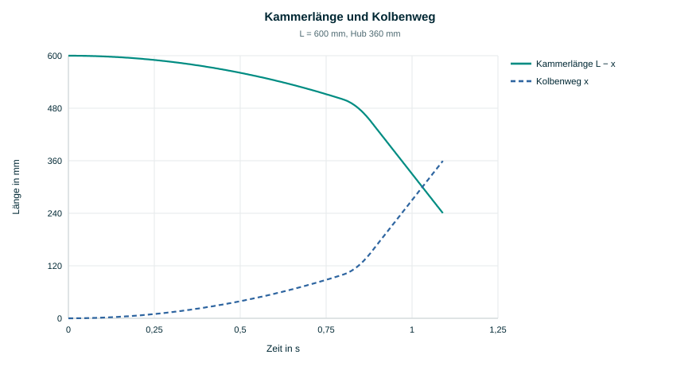

1. Aufgabe
In der ersten Phase eines Druckgussschusses fährt der Kolben langsam an, damit die Schmelze in der teilgefüllten Kammer eine Welle bildet, die die Kammer ohne Überschlag füllt und die Luft vor sich her zum Anschnitt schiebt. Ob das gelingt, hängt von der Schusskurve ab: fährt der Kolben zu schnell an, bricht die Welle und schließt Luft ein; fährt er zu langsam, kühlt die Schmelze an der Kammerwand ab. Um diese Phase zu rechnen, muss sich der Rand der Rechnung mit dem Kolben bewegen.
Dafür gibt es in OpenFOAM zwei Wege. Mit Topologieänderung (Schichten werden vor dem Kolben entfernt) bleiben die Zellen gleich groß, aber die Felder müssen bei jeder Änderung umgelegt werden, und das Netz ändert während der Rechnung seine Zellzahl. Mit reiner Netzbewegung bleibt die Topologie fest, und nur die Punkte wandern. Die Kammer ist ein Zylinder, der Kolben eine Ebene senkrecht zur Achse; hier genügt es, die ganze Kammer gleichmäßig in Achsrichtung zu stauchen. Zellzahl, Nachbarschaften und Zerlegung bleiben über den ganzen Hub gleich, und die Winkel des Netzes ändern sich nicht.
2. Das Netz der Kammer
Das Werkzeug shotSleeveMesh erzeugt das Netz aus einer einzigen
Parameterdatei (system/shotSleeveDict). Der Querschnitt ist ein O-Netz aus
fünf Blöcken: ein quadratischer Kern mit 60 % des Radius, dessen Ecken bei 76 % auf den
Kreis zulaufen, und vier Ringblöcke. So sind die Zellen über den ganzen Querschnitt fast
quadratisch und stehen an der Wand senkrecht, ohne die entarteten Zellen eines polaren
Netzes an der Achse. Über den Durchmesser liegen $N_D$ Zellen (15, 30 oder 60), in
Achsrichtung ist eine Zelle dreimal so lang wie quer.

setAlphaField exakt eingetragen.An der Stirnplatte entweicht die Luft durch ein Fenster oberhalb einer Sehne bei 42 % des
Radius über der Achse. Die Sehne wird auf die nächste Gitterlinie des Kerns gelegt, damit
das Fenster aus ganzen Blockflächen besteht; im Beispiel liegt sie bei 0,47 R, das Fenster
nimmt 18 % des Querschnitts ein. Hinter dem Fenster liegt ein kurzer Stutzen von
einem halben Durchmesser, darauf ein Steigrohr mit Krümmer, dessen Deckfläche der Auslass
ist. Stutzen und Steigrohr bewegen sich nicht. Das Steigrohr ist zwei Durchmesser hoch, so
dass die Schmelze auch bei hoher Füllung nicht vor dem Ende des Hubs austritt. In
dieLogicFoam ist der Auslass eine offene Entlüftung für die Luft und eine
Wand für die Schmelze.
Für den Beispielfall (Durchmesser 100 mm, Länge 600 mm, 40 % Füllung, $N_D = 30$)
entstehen 52 620 Zellen, davon 45 360 in der Kammer. Das Werkzeug schreibt das Netz im
selben Lauf mit der blockMesh-Bibliothek, dazu system/blockMeshDict als
Nachweis (der normale blockMesh erzeugt daraus dieselben Dateien) und
system/meshInfo mit Zellzahlen, Fenstergröße, Schmelzehöhe und Endzeit, die
das Allrun weiterverwendet.
3. Die Schusskurve
Die Bewegung des Kolbens folgt einer Schusskurve aus Stützpunkten. Der Kolben startet in Ruhe bei $x = 0$; zwischen zwei Stützpunkten beschleunigt er gleichförmig, so dass $v^2$ linear im Weg ist. Für einen Abschnitt von $(x_0, v_0)$ nach $(x_1, v_1)$:
mit der Zeit $\tau$ seit Beginn des Abschnitts. Position, Geschwindigkeit und Beschleunigung sind damit zu jeder Zeit analytisch bekannt, ebenso umgekehrt die Zeit, zu der der Kolben einen Weg erreicht; daraus bestimmt das Netzwerkzeug die Endzeit. Hinter dem letzten Stützpunkt fährt der Kolben mit der letzten Geschwindigkeit weiter. Die Stützpunkte lassen sich auf vier Arten angeben: als Weg und Geschwindigkeit, als Zeit und Geschwindigkeit (dann ist $v$ linear in der Zeit), als Froude-Zahl über dem bezogenen Weg, $\mathrm{Fr} = v/\sqrt{g D}$ über $s = x/x_{Hub}$, oder als Datei mit zwei Spalten.

postProcessing/piston/kinematics.dat).4. Das Bewegungsgesetz
Die Klasse shotSleeveMotionSolver leitet von OpenFOAMs
points0MotionSolver ab: sie kennt die Punkte des Ausgangsnetzes und berechnet
daraus die aktuellen Punkte. Mit der Koordinate $\zeta$ längs der Achse, gemessen von der
Stirnplatte zum Kolben, und der Kammerlänge $L$ gilt für jeden Punkt der Kammer
Punkte hinter der Stirnplatte ($\zeta_0 \le 0$: Stutzen und Steigrohr) bleiben stehen. Der Kolben ($\zeta_0 = L$) wandert genau um $x(t)$, die Stirnplatte bleibt fest, und dazwischen wird jede Zelle im selben Verhältnis gestaucht. Quer zur Achse ändert sich nichts. Daraus folgen drei Eigenschaften, die für die Rechnung wichtig sind:
- Das Netz ist eine reine Funktion der Zeit. Es gibt kein Verschiebungsfeld, das gelöst oder gespeichert werden müsste; ein Neustart setzt exakt dort fort, wo die Rechnung aufgehört hat, und die Bewegung kostet praktisch keine Rechenzeit.
- Winkel und Schiefe der Zellen bleiben erhalten, nur das Seitenverhältnis ändert sich. Eine Stauchung um 60 % verschlechtert das Netz nicht.
- Alle Zellen einer Querschnittsschicht ändern ihr Volumen gleich; die Stauchung verteilt sich über die ganze Kammer statt sich am Kolben zu häufen.
Die Kolbenposition, Geschwindigkeit, Beschleunigung und Kammerlänge werden in jedem
Schritt nach postProcessing/piston/kinematics.dat geschrieben.


5. Kopplung an den Solver
Die Bibliothek wird über constant/dynamicMeshDict mit
dynamicMotionSolverFvMesh geladen. OpenFOAM bestimmt aus den überstrichenen
Volumen der Flächen den Netzfluss meshPhi, so dass die Änderung jedes
Zellvolumens exakt der Summe der Netzflüsse über seine Flächen entspricht
(Raumerhaltung). Ein Solver auf bewegtem Netz muss an mehreren Stellen zwischen dem Fluss
relativ zum Netz und dem absoluten Fluss unterscheiden; in dieLogicFoam sind
das vier:
- Transport. isoAdvector, Temperatur und Einschlussmodelle transportieren mit dem Fluss relativ zum Netz. Am Kolben ist dieser Fluss null; die Schmelze wird allein durch die schrumpfenden Zellvolumen verdrängt.
- Druckgleichung. Die zeitliche Korrektur der Flüsse (
ddtCorr) braucht den absoluten Fluss des letzten Schritts; der Solver führt ihn als eigenes Feld und macht den Fluss erst nach der Druckgleichung wieder relativ. - Luftpakete. Die Masse eines Pakets wird aus den Zellmassen des letzten Schritts gebildet, mit den Zellvolumen des letzten Schritts ($V_0$). So verdichtet der Kolben die Luft, statt dass sich ihre Dichte mit dem Netz verschiebt.
- Gasenergie. Die Quellen der Potentialströmung im Gas sind die Gasvolumenänderungen der Zellen zwischen den beiden Netzen; die Gasströmung ist damit relativ zum Netz, wie der Transport der Gastemperatur.
Der Kolben selbst ist in dieLogicFoam eine Wand mit
movingWallVelocity; die Schwerkraftterme $g\cdot h$ werden nach jeder Bewegung
neu berechnet.
6. Prüfung
| Größe | Anfang des Hubs | Ende des Hubs |
|---|---|---|
| Zellen | 52 620 | 52 620 |
| größte Nichtorthogonalität | 22,3° | 22,3° |
| größte Schiefe | 0,75 | 0,75 |
| größtes Seitenverhältnis | 7,3 | 5,1 |
| Kammerlänge | 600 mm | 240 mm |
Schmelzevolumen, dieLogicFoam | 1 882,28 cm³ | 1 882,36 cm³ |
Schmelzevolumen, interFoam | 1 882,28 cm³ | 1 882,28 cm³ |
checkMesh meldet das Netz am Anfang und am Ende des Hubs als fehlerfrei; die
Winkelgrößen sind unverändert, das Seitenverhältnis sinkt, weil die in Achsrichtung
langen Zellen gestaucht werden. dieLogicFoam hält das Schmelzevolumen über den
ganzen Hub auf 0,005 %, interFoam auf demselben bewegten Netz exakt. Die
beiden kompressiblen VoF-Solver verlieren auf derselben Bewegung dagegen 26
(compressibleInterIsoFoam) und 46 % (compressibleInterFoam) der
Schmelze; die Ursache liegt in ihren Quelltermen der Alpha-Gleichung, nicht in der
Netzbewegung (siehe Abschnitt 12 der Solverbeschreibung).
Gegen interFoam weicht das Füllbild der Welle im Mittel um 2,2 % ab.
7. Einstellungen
dynamicFvMesh dynamicMotionSolverFvMesh; # constant/dynamicMeshDict motionSolverLibs (shotSleeve); motionSolver shotSleeve; shotSleeveCoeffs { pistonPatch inlet; axis (0 0 -1); # Richtung der Kolbenbewegung #include "$FOAM_CASE/system/shotSleeveDict" }
diameter 100; # system/shotSleeveDict, Längen in mm length 600; # Kolben bis Stirnplatte fillFraction 0.40; nCellsD 30; # Zellen über den Durchmesser axialStretch 3.0; coreFraction 0.6; cornerFraction 0.76; # O-Netz windowChord 0.42; # Fenster oberhalb 0,42 R stubLength 0.5; riserHeight 2.0; riserBend 0.2; # in D shotCurve { type positionVelocity; # auch timeVelocity, froudePosition, file values ((0 0.25) (100 0.25) (150 1.0) (599 1.0)); } endPosition auto; # Hub bis zur theoretisch vollen Kammer
Die Datei wird ohne Kopf von controlDict, fvSolution,
decomposeParDict und dynamicMeshDict eingebunden, so dass alle
Teile des Falls dieselben Zahlen sehen. Geändert wird nur sie; das erzeugte
blockMeshDict und meshInfo werden nicht von Hand bearbeitet.
8. Grenzen
axialStretch). Stutzen und Steigrohr stehen für den Anschnitt und sind nicht
die Form. Die Bewegung staucht alles zwischen Kolben und der Ebene im Abstand
length vor dem Kolben; was dahinter liegt, muss fest bleiben dürfen (Abschnitt 9).
9. Einsatz auf den Netzen der Validierung
Das Bewegungsgesetz braucht das O-Netz der Kammer nicht. Es verschiebt jeden Punkt des Netzes, der
zwischen dem Kolben (der Fläche pistonPatch) und der Ebene im Abstand length
davor liegt, und lässt alles jenseits dieser Ebene stehen. Damit läuft es auch auf den kartesischen
Netzen der Validierung, die tools/mesh/paperDieMesh.py aus Kammer, Büchse und Platte
schneidet; length ist dann die Länge des geraden Teils der Kammer.
- Trometer et al. 2023 (
sleeve_phi050,sleeve_phi060): die ganze Kammer Ø25,4 × 280 mm vor der Form, Kolben aus der Ruhe auf 1,75 m/s. Ergebnis und Befund auf der Seite des Falls. - Niida und Maeda 2020 (
p1_slow): die Kammer Ø50 vor dem Kolben ab 165 mm Kolbenweg, die konische Gießbüchse (Ø50 auf Ø57) bleibt fest, weillengthnur bis zu ihrem Anfang reicht; der Kolben fährt 20 mm/s und schaltet bei 174,1 mm auf 150 mm/s um. 399 000 Zellen, das Wasser im Netz weicht um 0,5 % von der Füllung ab (Treppenstufen des Kreises).
Die Schusskurve dieser Fälle ist vom Typ timeVelocity; sie beginnt immer aus der Ruhe, der
Anlauf ist der erste Punkt der Tabelle. Auf diesen Netzen kostet die Bewegung Rechenzeit: mit SST wird der
Wandabstand in jedem Schritt neu bestimmt, ein Schritt dauert auf einem Kern etwa 8 s bei 400 000 Zellen.